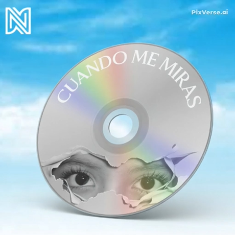

ARTISTA #01 · PRIMER PROYECTO DE NMO RECORDS
NIKONI
Nicolás Albán es un artista independiente ecuatoriano, nacido en Santo Domingo y criado en la Amazonía ecuatoriana. Cuando me miras es su sencillo debut.
EL PRIMER PROYECTO ACOMPAÑADO
Una canción
para empezar.
“Cuando me miras” explora la timidez, los nervios y la vulnerabilidad de sentir un primer amor. Este sencillo marca el primer lanzamiento acompañado por NMO Records.
CRÉDITOS DEL SENCILLO
Artista: NIKONI
Composición: Nicolás Albán · Jhona Blanco
Letra: Nicolás Albán
Producción instrumental: Soul Prod
Lanzamiento: 25 de junio de 2026
℗: NIKONI
REPRODUCTOR NMO RECORDSAUDIO

Cuando me mirasNIKONISencillo debut · 2026
ESCUCHA EL SENCILLO
0:000:00
LISTO PARA ESCUCHAR
¿TIENES UN LANZAMIENTO EN MENTE?